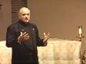
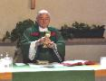
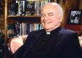
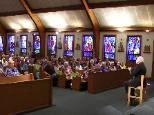
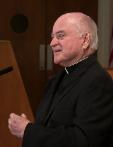
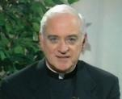
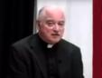

VIDEO CLIPS
The following are video "clips" with messages from Fr. John Catoir. They vary in length from
1 min. to 30 min. Please click on the "Title" link to see the video of your choice. These were taped
in a variety of locations and years -- some at retreats, and some with special purposes. We hope
you enjoy them all. Encourage family and friends to also connect with Fr. Catoir on Facebook and
Twitter. Also see his daily blog at www.messengerofjoy.com
1 min. to 30 min. Please click on the "Title" link to see the video of your choice. These were taped
in a variety of locations and years -- some at retreats, and some with special purposes. We hope
you enjoy them all. Encourage family and friends to also connect with Fr. Catoir on Facebook and
Twitter. Also see his daily blog at www.messengerofjoy.com
VIDEO 1
"People of Joy: Your Introduction to Spiritual Joy."
An inspirational message everyone needs to hear. Jesus
said, "I have come that your joy may be full." (10 min.)
"People of Joy: Your Introduction to Spiritual Joy."
An inspirational message everyone needs to hear. Jesus
said, "I have come that your joy may be full." (10 min.)
VIDEO 2
"Joy: The Spirit's Secret to the Catholic Church's
Survival."
Interview with Fr. John Catoir on his book of same title by
Jack Heaney on Christopher-Close Up.(23:00 minutes.)
"Joy: The Spirit's Secret to the Catholic Church's
Survival."
Interview with Fr. John Catoir on his book of same title by
Jack Heaney on Christopher-Close Up.(23:00 minutes.)
VIDEO 3
"Faithfulness to the Church"
Thoughts on how we can remain faithful to the Church even during
the most difficult times. Presentation at Avila Retreat House in Oct.
2012. Catoir - (4:37 minutes.)
"Faithfulness to the Church"
Thoughts on how we can remain faithful to the Church even during
the most difficult times. Presentation at Avila Retreat House in Oct.
2012. Catoir - (4:37 minutes.)
VIDEO 4 - Series - 2 Parts
Video retreat, New Jersey. Includes Fr. John Catoir's insights on
making the choice to live your life joyfully.
Part 1 - "Joy is a Choice" - 11:30 min.
Part 2 - "Joy is a Choice" - 14 min.
Video retreat, New Jersey. Includes Fr. John Catoir's insights on
making the choice to live your life joyfully.
Part 1 - "Joy is a Choice" - 11:30 min.
Part 2 - "Joy is a Choice" - 14 min.
VIDEO 6 - Series - 2 Parts
Retreat at Holy Trinity Seminary, Irving, Texas in 2005. Reflects
on his own priesthood and encourages others.
Part 1: "Joy of Priesthood" - 14 min.
Part 2: "Joy of Priesthood" - 14 min.
Retreat at Holy Trinity Seminary, Irving, Texas in 2005. Reflects
on his own priesthood and encourages others.
Part 1: "Joy of Priesthood" - 14 min.
Part 2: "Joy of Priesthood" - 14 min.


Fr. John Catoir
. . . Messenger of Joy
. . . Messenger of Joy
VIDEO 7
Interview with Jimmy Cagney
Fr. Catoir asks this great actor about his life, family, acting career
and his deep faith. (10 minutes)
Interview with Jimmy Cagney
Fr. Catoir asks this great actor about his life, family, acting career
and his deep faith. (10 minutes)
VIDEO 8
Interview with Bob Newhart
Excerpts an interview with actor and comedian, Bob Newhart,
about his career and his faith. (10 minutes)
Interview with Bob Newhart
Excerpts an interview with actor and comedian, Bob Newhart,
about his career and his faith. (10 minutes)
VIDEO 9
Interview with Betty Hutton
Excerpts of an interview with actress, Betty Hutton (in her later
years) about life's challenges and how her faith gave her strength.
(10 minutes)
Interview with Betty Hutton
Excerpts of an interview with actress, Betty Hutton (in her later
years) about life's challenges and how her faith gave her strength.
(10 minutes)
VIDEO 10
Interview with Fr. Catoir
"On Joy" - with Dennis Heaney (25 minutes)
Full interview from a Christopher's Close-Up program features
Fr. John Catoir reflecting on his ministry.
Interview with Fr. Catoir
"On Joy" - with Dennis Heaney (25 minutes)
Full interview from a Christopher's Close-Up program features
Fr. John Catoir reflecting on his ministry.

VIDEO 11
"Joy to the World" with Fr. John Catoir
An uplifting holiday message to all our friends and
supporters in 2017. Joy is a choice that each of us
can make daily. (6 min.) Version 2 -2019 (5 min.)
"Joy to the World" with Fr. John Catoir
An uplifting holiday message to all our friends and
supporters in 2017. Joy is a choice that each of us
can make daily. (6 min.) Version 2 -2019 (5 min.)

VIDEO 12 - Series (5 Parts)
"Be Your Own Best Friend" 14 min. each
Workshop in Parsippany, NJ, many good tips. CLICK BELOW:
"Be Your Own Best Friend" 14 min. each
Workshop in Parsippany, NJ, many good tips. CLICK BELOW:


VIDEO 13 - Series (3 Parts)
"Prayer Made Simple and Joyful"
Christopher Series -1997, NY, teaches how to add a refreshing
measure of joy to your prayer life. 25 min. each. CLICK BELOW:
"Prayer Made Simple and Joyful"
Christopher Series -1997, NY, teaches how to add a refreshing
measure of joy to your prayer life. 25 min. each. CLICK BELOW:
Part 1: Introduction, Life Perspective
Part 2: Fear vs. Trust; Forgiveness
Part 3: Controlling Thoughts and Feelings
Part 4: Making Choices; Breaking Habits!
Part 5: Conclusion -- Choose Joy!
Part 2: Fear vs. Trust; Forgiveness
Part 3: Controlling Thoughts and Feelings
Part 4: Making Choices; Breaking Habits!
Part 5: Conclusion -- Choose Joy!
Part 1: "Giving Yourself to God"
Part 2: "Giving Yourself in the Present Moment"
Part 3: "Giving Yourself Joyfully"
Part 2: "Giving Yourself in the Present Moment"
Part 3: "Giving Yourself Joyfully"
| Be joyful God loves you! |

VIDEO 14 - "Mother Teresa"
"Interview with Ann Petrie"
Producer/Writer, talks about her PBS documentary on Mother Teresa of
Calcutta, her mission, and visits with this great Saint. (Length: 13 min.)
"Interview with Ann Petrie"
Producer/Writer, talks about her PBS documentary on Mother Teresa of
Calcutta, her mission, and visits with this great Saint. (Length: 13 min.)

VIDEO 15 - "Coping with Pain"
"Interview with Antionette Bosco"
An heroic wife and mother describes losing two children in tragic circumstances
-- testing her faith and giving her a new perspective on dealing and coping with
pain through faith and prayer. Author and speaker. (Length: 15:47 minutes)
"Interview with Antionette Bosco"
An heroic wife and mother describes losing two children in tragic circumstances
-- testing her faith and giving her a new perspective on dealing and coping with
pain through faith and prayer. Author and speaker. (Length: 15:47 minutes)
VIDEO 16 - Part I "Faith, Forgiveness & Freedom"
"Interview with Terry Anderson"
Taken hostage in Lebanon, he spent seven years held hostage in chains and
learned many lessons from his experiences in captivity. His faith was essential
to his survival. (Length: 10:44 minutes)
"Interview with Terry Anderson"
Taken hostage in Lebanon, he spent seven years held hostage in chains and
learned many lessons from his experiences in captivity. His faith was essential
to his survival. (Length: 10:44 minutes)
VIDEO 17 - Part II "Faith, Forgiveness & Freedom"
"Interview with Fr. Lawrence Martin Jenco"
Taken hostage in Lebanon, he spent years held hostage in chains and learned
many lessons from his experiences in captivity. He was able to minister to
other captives and captors alike. (Length: 11 min.)
"Interview with Fr. Lawrence Martin Jenco"
Taken hostage in Lebanon, he spent years held hostage in chains and learned
many lessons from his experiences in captivity. He was able to minister to
other captives and captors alike. (Length: 11 min.)
VIDEO 18 - "Successful Parenting"
Interview with Ann & John Murphy
Parenting authors and lecturers speak with Fr. Catoir on the key elements of
successful parenting and ways to communicate and achieve strong families
of faith and love in today's world. (Length: 17:00 min.)
Interview with Ann & John Murphy
Parenting authors and lecturers speak with Fr. Catoir on the key elements of
successful parenting and ways to communicate and achieve strong families
of faith and love in today's world. (Length: 17:00 min.)
VIDEO 19 - "Our Immigrant Heritage"
Segment to Celebrate America -- Fr. Catoir talks about people who
take great pride in their country. Portrays one immigrant who is now the
"keeper of the flame"-- the torch of the Statue of Liberty. (Length: 5:13 min.)
Segment to Celebrate America -- Fr. Catoir talks about people who
take great pride in their country. Portrays one immigrant who is now the
"keeper of the flame"-- the torch of the Statue of Liberty. (Length: 5:13 min.)

VIDEO 20 - "Interview with Marie Balter" - 14 min.
Fr. Catoir talks with her about mental health in America and her personal
journey in a mental health facility and the power of prayer and perseverance
which helped to break through and, later, becoming a counselor and
inspiration to clients.
Fr. Catoir talks with her about mental health in America and her personal
journey in a mental health facility and the power of prayer and perseverance
which helped to break through and, later, becoming a counselor and
inspiration to clients.
VIDEO 21 - "Taking God to Work" - Length: 13 min.
Fr. Catoir speaks with a clergyman, Rev. Robert Massie who went back to
school at Harvard Business school, and John Chervokas, who writes poetry
about bringing God in the workplace. Interesting and relevant.
Fr. Catoir speaks with a clergyman, Rev. Robert Massie who went back to
school at Harvard Business school, and John Chervokas, who writes poetry
about bringing God in the workplace. Interesting and relevant.
VIDEO 22 - "Interview with Art Fettig" - Length: 6:09
Fr. Catoir talks with this television producer of children's program in New York.
His long career includes a creative children's series and other productions
with "The Christopher's."
Fr. Catoir talks with this television producer of children's program in New York.
His long career includes a creative children's series and other productions
with "The Christopher's."
VIDEO 23 - "Interview with Eda Leshan" - Length: 10 min.
Fr. Catoir speaks with Eda Leshan, who has worked with children for many
years and shares her insights on working with and encouraging their self
esteem. Tells how parents can handle things when children drive you crazy.
Fr. Catoir speaks with Eda Leshan, who has worked with children for many
years and shares her insights on working with and encouraging their self
esteem. Tells how parents can handle things when children drive you crazy.
VIDEO 24 - "Interviews Florence NASS" - Length: 9:35
Fr. Catoir speaks with Florence Nass about Mothers Against Drunk Drivers
and their impact and influence on America. How volunteer mothers created a
support group to discourage drinking and driving -- saving thousands of lives.
Fr. Catoir speaks with Florence Nass about Mothers Against Drunk Drivers
and their impact and influence on America. How volunteer mothers created a
support group to discourage drinking and driving -- saving thousands of lives.
VIDEO 25 - "Interview: Melissa Benson" - Length: 7:00 min.
Fr. Catoir talks with Melissa Benson about the rich spirit of volunteerism in
America and the thousands of hours they have contributed -- saving time,
money and resources for countless non-profits across the country.
Fr. Catoir talks with Melissa Benson about the rich spirit of volunteerism in
America and the thousands of hours they have contributed -- saving time,
money and resources for countless non-profits across the country.
VIDEO 26 - "Interview with Steven Schubert" Length: 6:00
min. A discussion with Steven Schubert about the founding of Big Brothers.
Describes how this group provides love, dedication and encouragement to
children and young men without fathers, as role models.
min. A discussion with Steven Schubert about the founding of Big Brothers.
Describes how this group provides love, dedication and encouragement to
children and young men without fathers, as role models.
VIDEO 27 - "Interview with Adell Carr" - Length: 5:50 min.
Learn about her role in the medical field and more about how volunteers have
an impact in hospitals, nursing homes, and all types of medical facilities --
giving encouragement and uplifting the spirits of those who need it most.
Learn about her role in the medical field and more about how volunteers have
an impact in hospitals, nursing homes, and all types of medical facilities --
giving encouragement and uplifting the spirits of those who need it most.


VIDEO 28 - "Interview with Fr. Henri Nouwen" - Length: 7:18 min.
Talks about his book, "Beyond the Mirror," and how a near-death experience
brought him closer to God and an understanding of his own purpose and
ministry in life. Fr. Nouwen was a well-known Catholic Theologian.
Talks about his book, "Beyond the Mirror," and how a near-death experience
brought him closer to God and an understanding of his own purpose and
ministry in life. Fr. Nouwen was a well-known Catholic Theologian.
VIDEO 29 - "Interview with Archbishop John O'Connor"-
Length: 6:30 min. Archbishop John O'Connor, New York, served the
Archdiocese of New York until his death in May 2000. He spent 25 years in the
Navy as a Chaplain, serving in the Korean War, and as a Priest for many years.
He talks about the necessary attributes of being a good spiritual leader.
Length: 6:30 min. Archbishop John O'Connor, New York, served the
Archdiocese of New York until his death in May 2000. He spent 25 years in the
Navy as a Chaplain, serving in the Korean War, and as a Priest for many years.
He talks about the necessary attributes of being a good spiritual leader.
VIDEO 30 - "Interview with Bishop Thomas Gumbleton"
Length: 6:30 min. Bishop Gumbleton talks about peacemakers in his day.
Length: 6:30 min. Bishop Gumbleton talks about peacemakers in his day.
VIDEO 31 - "Interview with Cardinal Renato Martino"
UN Observer for the Vatican and Churches inpact on UN. Length:
UN Observer for the Vatican and Churches inpact on UN. Length:
VIDEO 32 -